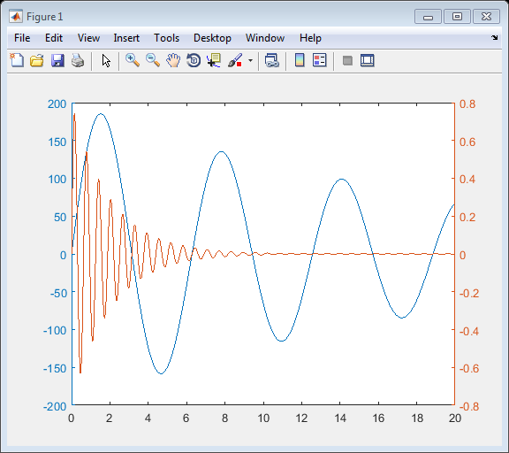

thingSpeakPlotYY
Create 2-D line plot with Y axes on both sides
Contents
Syntax
thingSpeakPlotYY(X1,Y1,X2,Y2)
thingSpeakPlotYY(X1,Y1,X2,Y2,Name,Value)
Description
thingSpeakPlotYY(X1,Y1,X2,Y2) plots Y1 versus X1 with y-axis labeling on the left, and on the same axes plots Y2 versus X2 with y-axis labeling on the right.
thingSpeakPlotYY(X1,Y1,X2,Y2,Name,Value) plots Y1 versus X1 produces a plot with using options specified by Name,Value pair arguments.
Examples
Create a Curved YY Plot
Create two curves plotted on the same axes, with scales labeled on the right and left.
x = 0:0.01:20; y1 = 200*exp(-0.05*x).*sin(x); y2 = 0.8*exp(-0.5*x).*sin(10*x); thingSpeakPlotYY(x,y1,x,y2)
Input Arguments
X - X values, specified as a scalar, a vector, or a matrix. X can be a numeric array, logical array, or datetime array.
Y - Y values, specified as a scalar, a vector, or a matrix. Y can be a numeric array, or logical array.
Name-Value Pair Arguments
Specify optional comma-separated pairs of Name,Value arguments. Name is the argument name and Value is the corresponding value. Name must appear inside single quotes (' '). You can specify several name and value pair arguments in any order as Name1,Value1,...,NameN,ValueN.
Example: thingSpeakPlotYY(x1,y1,x2,y2,'Color1','red',Color2,'green','LineStyle',':','Marker','o')
'Color1' |
Line color, specified as an RGB triplet or a color string. The default RGB triplet value of [0 0 1] corresponds to blue.
Example: thingSpeakPlotYY(x1,y1,x2,y2,'Color1',[1 0 1]),'Color2','yellow'); |
|||||||||||||||||||||||||||
'Color2' |
Line color of the second plot and right Y-axis scale, specified as an RGB triplet or a color string (see 'Color1' for options). The RGB triplet value of [1 0 0] corresponds to red. Specify a color for each line separately. Example: thingSpeakPlotYY(x1,y1,x2,y2,'Color1',[1 0 1]),'Color2','yellow'); |
|||||||||||||||||||||||||||
'LineWidth1' |
Plot line width of the first scale, specified as a positive scalar in point units. Example: thingSpeakPlotYY(x1,y1,x2,y2,'LineWidth1',1.5,'LineWidth2',2); Data Types: single|double|int8|int16|int32|int64|uint8|uint16|uint32|uint64 |
|||||||||||||||||||||||||||
'LineWidth2' |
Plot outline width of the second scale, specified as a positive scalar in point units. Example: thingSpeakPlotYY(x1,y1,x2,y2,'LineWidth1',1.5,'LineWidth2',2); Data Types: single|double|int8|int16|int32|int64|uint8|uint16|uint32|uint64 |
|||||||||||||||||||||||||||
'YScale1' |
Left Y-axis scale, specified as a string. Allowed values are 'linear' or 'log'. Example: thingSpeakPlotYY(x1,y1,x2,y2,'YScale1','log'); |
|||||||||||||||||||||||||||
'YScale2' |
Right Y-axis scale, specified as a string. Allowed values are 'linear' or 'log'. Example: thingSpeakPlotYY(x1,y1,x2,y2,'YScale2','log'); |
|||||||||||||||||||||||||||
'Grid' |
Plot grid, specified as a string input turning the grid 'on' or 'off'. Example: thingSpeakPlotYY(x1,y1,x2,y2,'Grid','on'); |
|||||||||||||||||||||||||||
'YLabel1' |
Left Y-axis label, specified as a string. Example: thingSpeakPlotYY(x1,y1,x2,y2,'YLabel1','Left Y-Axis'); |
|||||||||||||||||||||||||||
'YLabel2' |
Right Y-axis label, specified as a string. Example: thingSpeakPlotYY(x1,y1,x2,y2,'YLabel2','Right Y-Axis'); |
|||||||||||||||||||||||||||
'Xlabel' |
X-axis label, specified as a string. Example: thingSpeakPlotYY(x1,y1,x2,y2,'XLabel','X-Axis'); |
|||||||||||||||||||||||||||
'Title' |
Title of plot, specified as a string. Example: thingSpeakPlotYY(x1,y1,x2,y2,'Title','Plot Title'); |
|||||||||||||||||||||||||||
'XGrid' |
Specify if your plot has a grid only on the X axis. Set the value to 'on' to display an X axis grid. |
|||||||||||||||||||||||||||
'YGrid1' |
Specify if your plot has a left Y-axis grid. Set the value to 'on' to display a left Y-axis grid. |
|||||||||||||||||||||||||||
'YGrid2' |
Specify if your plot has a right Y-axis grid. Set the value to 'on' to display a right Y-axis grid. |
See Also
thingSpeakArea | thingSpeakPlot | thingSpeakRead | thingSpeakScatter | thingSpeakStem | thingSpeakWrite | urlFilter